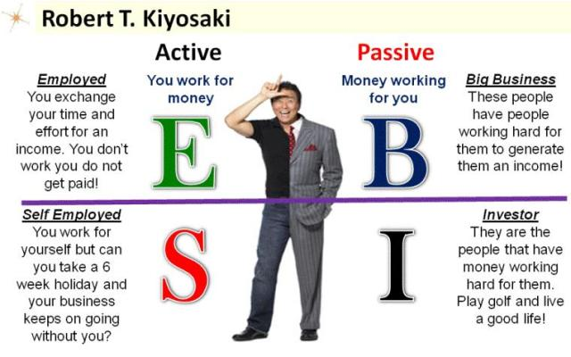

Retirement is the withdrawal from one's position or occupation or from one's active working life.[1] A person may also semi-retire by reducing work hours. A person may retire at whatever age they please. However, a country's tax laws or state old-age pension rules usually mean that in a given country a certain age is thought of as the "standard" retirement age. As life expectancy increases and more and more people live to an advanced age, in many countries the age at which a pension is awarded has been increased in the 21st century, often progressively.[13]
E Employee (E) – Otherwise known as a job Self-Employed (S) – Small business owners or self employed (Doctors, and lawyers) Business Owner (B) – Big businesses (500 and more employees). Businesses that are selling products and predefined services. Investor (I) – People like Warren Buffett
